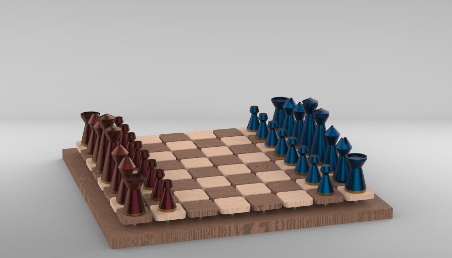
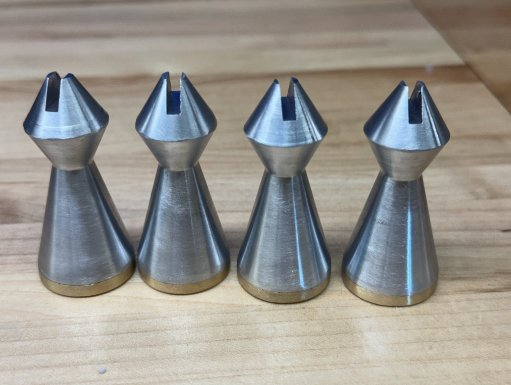
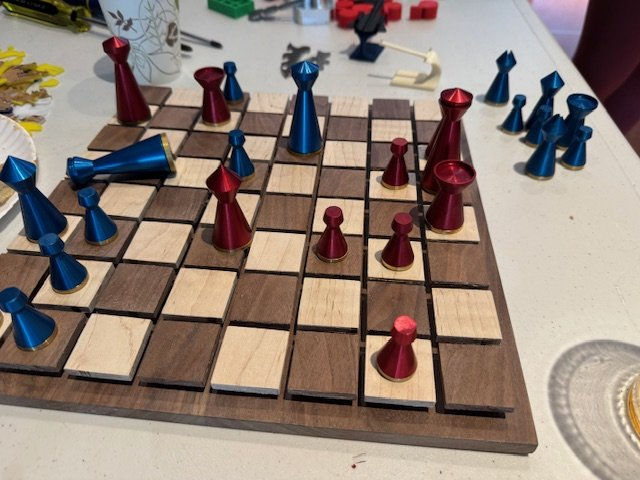

Precision Manufacturing, Oct 2024
Bauhaus Chess Set
A Bauhaus-themed chess set turned from aluminum and brass on a Haas TL-1 CNC lathe, paired with a walnut board.

Overview
The Bauhaus brief reduced every piece to pure turned geometry: cylinders, cones, and spheres, with the identity of each piece reading from silhouette alone. That makes the design problem and the manufacturing problem the same problem, since every aesthetic decision is a lathe operation.
Rendering the full set in SolidWorks let us compare proportions across all six piece types on the board before committing to toolpaths.


Execution
Working in a team of four, we designed the set in SolidWorks, programmed toolpaths in MasterCAM, and turned the pieces on a Haas TL-1 CNC lathe in aluminum and brass. The hardest part was consistency: making sixteen identical pawns depended on repeatable workholding, managing tool wear, and process control.
The pieces sit on a walnut and maple board, and the finished set is colored red and blue to separate the two sides while each piece still reads by silhouette.
